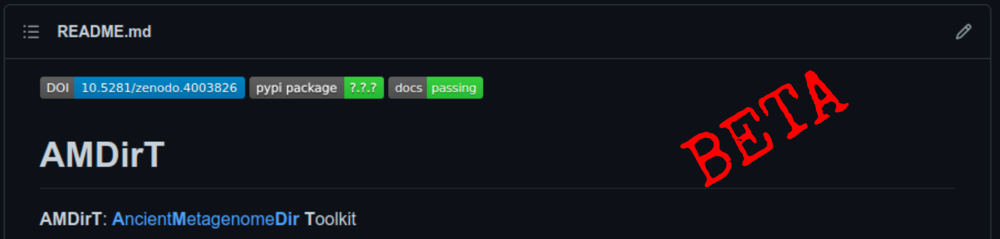
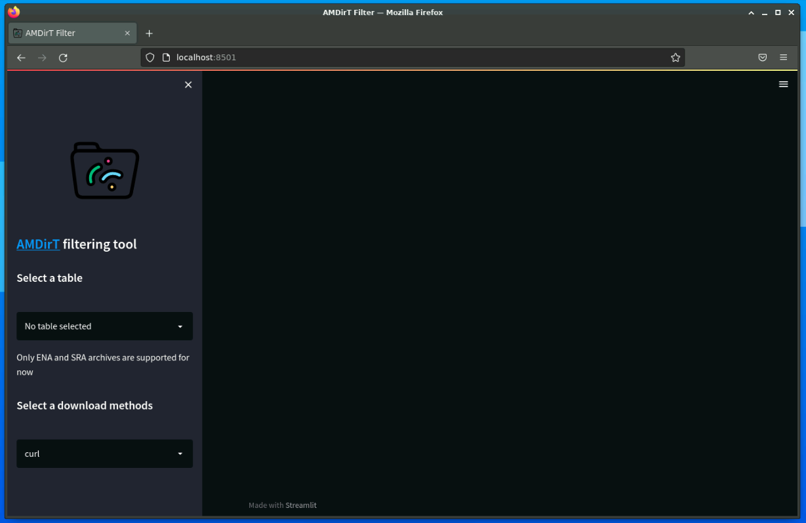
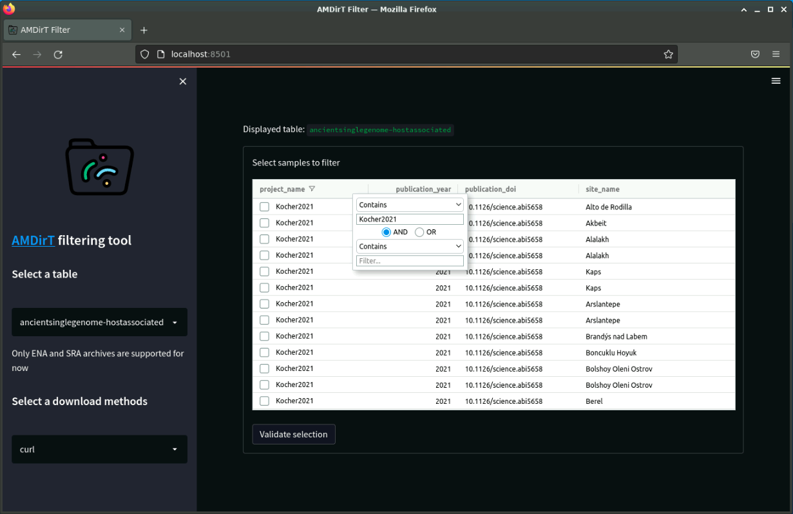
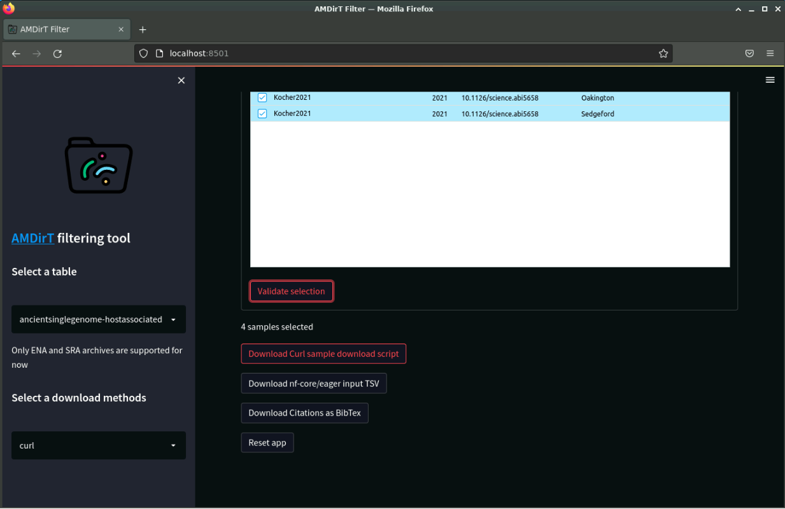

16 Introduction to AncientMetagenomeDir
For this chapter’s exercises, if not already performed, you will need to create the conda environment from the yml file in the following link (right click and save as to download), and once created, activate the environment with:
conda activate accessing-ancientmetagenomic-data16.1 Lecture
PDF version of these slides can be downloaded from here.
16.2 Introduction
In most bioinformatic projects, we need to include publicly available comparative data to expand or compare our newly generated data with.
Including public data can benefit ancient metagenomic studies in a variety of ways. It can help increase our sample sizes (a common problem when dealing with rare archaeological samples) - thus providing stronger statistical power. Comparison with a range of previously published data of different preservational levels can allow an estimate on the quality of the new samples. When considering solely (re)using public data, we can consider that this can also spawn new ideas, projects, and meta analyses to allow further deeper exploration of ancient metagenomic data (e.g., looking for correlations between various environmental factors and preservation).
Fortunately for us, genomicists and particularly palaeogenomicists have been very good at uploading raw sequencing data to well-established databases.
In the vast majority of cases you will be able to find publically available sequencing data on the INSDC association of databases, namely the EBI’s European Nucleotide Archive (ENA), and NCBI or DDBJ’s Sequence Read Archives (SRA). However, you may in some cases find ancient metagenomic data on institutional FTP servers, domain specific databases (e.g. OAGR), Zenodo, Figshare, or GitHub.
But while the data is publicly available, we need to ask whether it is ‘FAIR’.
16.3 Finding Ancient Metagenomic Data
FAIR principles were defined by researchers, librarians, and industry in 2016 to improve the quality of data uploads - primarily by making data uploads more ‘machine readable’. FAIR standards for:
- Findable
- Accessible
- Interoperable
- Reproducible
And when we consider ancient metagenomic data, we are pretty close to this. Sequencing data is in most cases accessible (via the public databases like ENA, SRA), interoperable and reproducible because we use field standard formats such as FASTQ or BAM files. However Findable remains an issue.
This is because the metadata about each data file is dispersed over many places, and very often not with the data files themselves.
In this case I am referring to metadata such as: What is the sample’s name? How old is it? Where is it from? Which enzymes were used for library construction? What sequencing machine was this library sequenced on?
To find this information about a given data file, you have to search many places (main text, supplementary information, the database itself), for different types of metadata (as authors report different things), and also in different formats (text, tables, figures.
This very heterogenous landscape makes it difficult for machines to index all this information (if at all), and thus means you cannot search for the data you want to use for your own reserch in online search engines.
16.4 AncientMetagenomeDir
This is where the SPAAM community project AncientMetagenomeDir comes in. AncientMetagenomeDir is a resource of lists of metadata of all publishing and publically available ancient metagenomes and microbial genome-level enriched samples.
By aggregating and standardising metadata and accession codes of ancient metagenomic samples, the project aims to make it easier for people to find comparative data for their own projects, as well as help track the field over time and facilitate meta analyses.
Currently the project is split over three main tables: host-associated metagenomes (e.g. ancient microbiomes), host-associated single-genomes (e.g. ancient pathogens), and environmental metagenomes (e.g. lakebed cores or cave sediment sequences).
The repository already contains more than a thousand samples and span the entire globe and as far back as hundreds of thousands of years.
To make the lists of samples and their metadata as accessible and interoperable as possible, we utilise simple text (TSV - tab separate value) files - files that can be opened by pretty much all spreadsheet tools (e.g., Microsoft Office excel, LibreOffice Calc) and languages (R, Python etc.).

Criticially, by standardising the recorded all metadata across all publications this makes it much easier for researchers to filter for particular time periods, geographical regions, or sample types of their interest - and then use the also recorded accession numbers to efficiently download the data.
At their core all different AncientMetagenomeDir tables must have at 6 minimum metadata sets:
- Publication information (doi)
- Sample name(s)
- Geographic location (e.g. country, coordinates)
- Age
- Sample type (e.g. bone, sediment, etc.)
- Data Archive and accessions
Each table then has additional columns depending on the context (e.g. what time of microbiome is expected for host-associated metagenoes, or species name of the genome that was reconstructed).
The AncientMetagenomeDir project already has 3 releases, and will continued to be regularly updated as the community continues to submit new metadata of samples of new publications as they come out.
16.5 Further Improving Metadata Reporting in Ancient Metagenomics
However, for researchers, sample-level metadata likely will not include all the information that is needed to include and process public data in their own projects.
The SPAAM community have been busy over the last few months extending the types of metadata included in the AncientMetagenomeDir project, to include library level metadata.
This metadata includes things such as whether a given set of data files contain sequencing data sequenced on which platform, whether the libraries have undergone damage treatment in the lab, or whether the uploaded data contains all or only mapped reads.
We have also started a new project - a MIxS checklist currently entitled ‘MINAS’ - which we aim to make the standard metadata reporting sheet for all ancient metagenomics and even for any ancient DNA sample. Such a checklist would be interegrated into services such as the ENA or SRA, and therefore would standardise metadata alongside the raw data, and make ancient metagenomic data much more findable with search engines.
Finally, to make it easier for researchers who are not familiar with sequencing database infrastucture, we are in the process of building a new tool (something already in a usable state) called AMDirT. This allows a web browser-based GUI to filter and select data, and produce scripts for you to download all the selected data (without having to go to the databases themselves).
This is something we are going to try out now!
16.6 Running AMDirT

First, we will need to activate a conda environment, and then install the latest development version of the tool for you.
This tutorial will require a web-browser! Make sure to run on your local laptop/PC or on a server with X11 forwarding
Open your terminal, and run the following two commands:
conda activate git-eager
pip install --upgrade --force-reinstall git+https://github.com/SPAAM-community/AMDirT.git@devOnce that (hopefully) installs correctly, we can load the tool by running
AMDirT filterYour web browser should now load, and you should see a two panel page.

Under Select a table use the dropdown menu to select ‘ancientsinglegenome-hostassociated’.
You should then see a table, pretty similar what you are familiar with with spreadsheet tools such as Microsoft Excel or LibreOffice calc.

To navigate, you can scroll down to see more rows, and press shift and scroll to see more columns, or use click on a cell and use your arrow keys (⬆,⬇,⬅,➡) to move around the table.
You can reorder columns by clicking on the column name, and also filter by pressing the little ‘burger’ icon that appears on the column header when you hover over a given column.
As an exercise, we will try filtering to a particular set of samples, then generate some download scripts, and download the files.
First, filter the project_name column to ‘Kocher2021’.

Then scroll to the right, and filter the geo_loc_name to ‘United Kingdom’.

You should be left with 4 rows.
Finally, scroll back to the first column and tick the boxes of these four samples.

Once you’ve selected the samples you want, you can press Validate selection. You should then see a series loading-spinner, and new buttons should appear!

You should have three main buttons:
- Download Curl sample download script
- Download nf-core/eager input TSV
- Download Citations as BibText
The first button is for generating a download script that will allow you to immediately download all sequencing data of the samples you selected. The second button is a pre-configured input file for use in the nf-core/eager ancient DNA pipeline, and finally, the third button generates a text file with (in most cases) all the citations of the data you downloaded, in a format accepted by most reference/citation managers.
It’s important to note you are not necessarily restricted to Curl for downloading the data, or nf-core/eager for running the files. AMDirT aims to add support for whatever tools or pipelines requested by the community. For example, an already supported download alternative is with the nf-core/fetchNGS pipeline. You can select these using the drop-down menus on the left hand-side.
Press the three buttons to make sure you download the files. And once this is done, you can close the tab of the web browser, and in the terminal you can press ctrl + c to shutdown the tool.
16.7 Inspecting AMDirT Output
Lets look at the files that AMDirT has generated for you.
First you should cd into the directory that your web browser downloaded the files into (e.g. cd ~/Downloads/), then look inside the directory. You should see the following three files
$ ls
ancientMetagenomeDir_curl_download_script.sh
ancientMetagenomeDir_citations.bib
ancientMetagenomeDir_eager_input.csvWe can simple run cat on each file to look inside. If you run cat on the curl download script, you should see a series of curl commands with the correct ENA links for you for each of the samples you wish to download.
$ cat ancientMetagenomeDir_curl_download_script.sh
#!/usr/bin/env bash
curl -L ftp://ftp.sra.ebi.ac.uk/vol1/fastq/ERR605/009/ERR6053619/ERR6053619.fastq.gz -o ERR6053619.fastq.gz
curl -L ftp://ftp.sra.ebi.ac.uk/vol1/fastq/ERR605/008/ERR6053618/ERR6053618.fastq.gz -o ERR6053618.fastq.gz
curl -L ftp://ftp.sra.ebi.ac.uk/vol1/fastq/ERR605/005/ERR6053675/ERR6053675.fastq.gz -o ERR6053675.fastq.gz
curl -L ftp://ftp.sra.ebi.ac.uk/vol1/fastq/ERR605/006/ERR6053686/ERR6053686.fastq.gz -o ERR6053686.fastq.gzBy providing this script for you, AMDirT facilitates fast download of files of interest by replacing the one-by-one download commands for each sample with a single command!
$ bash ancientMetagenomeDir_curl_download_script.sh
curl -L ftp://ftp.sra.ebi.ac.uk/vol1/fastq/ERR605/009/ERR6053619/ERR6053619.fastq.gz -o ERR6053619.fastq.gz
curl -L ftp://ftp.sra.ebi.ac.uk/vol1/fastq/ERR605/008/ERR6053618/ERR6053618.fastq.gz -o ERR6053618.fastq.gz
curl -L ftp://ftp.sra.ebi.ac.uk/vol1/fastq/ERR605/005/ERR6053675/ERR6053675.fastq.gz -o ERR6053675.fastq.gz
curl -L ftp://ftp.sra.ebi.ac.uk/vol1/fastq/ERR605/006/ERR6053686/ERR6053686.fastq.gz -o ERR6053686.fastq.gzRunning this command should result in progress logs of the downloading of the data of the four selected samples!
Once the four samples are downloaded, AMDirT then facilitates fast processing of the data, as the eager script can be given directly to nf-core/eager as input. Importantly by including the library metadata (mentioned above), researchers can leverage the complex automated processing that nf-core/eager can perform when given such relevant metadata.
$ cat ancientMetagenomeDir_eager_input.csv
Sample_Name Library_ID Lane Colour_Chemistry SeqType Organism Strandedness UDG_Treatment R1 R2 BAM
I0157 ERR6053618 0 4 SE Homo sapiens double unknown ERX5692504_ERR6053618.fastq.gz NA NA
I0161 ERR6053619 0 4 SE Homo sapiens double unknown ERX5692505_ERR6053619.fastq.gz NA NA
OAI017 ERR6053675 0 4 SE Homo sapiens double half ERX5692561_ERR6053675.fastq.gz NA NA
SED009 ERR6053686 0 4 SE Homo sapiens double half ERX5692572_ERR6053686.fastq.gz NA NAFinally, we can look into the citations file which will provide you with the citation information of all the downloaded data and AncientMetagenomeDir itself.
The contents of this file is reliant on indexing of publications on CrossRef. In some cases not all citations will be present, so this should be double checked!
$ cat ancientMetagenomeDir_citations.bib
@article{Fellows_Yates_2021,
doi = {10.1038/s41597-021-00816-y},
url = {https://doi.org/10.1038%2Fs41597-021-00816-y},
year = 2021,
month = {jan},
publisher = {Springer Science and Business Media {LLC}},
volume = {8},
number = {1},
author = {James A. Fellows Yates and Aida Andrades Valtue{\~{n}}a and {\AA}shild J. V{\aa}gene and
Becky Cribdon and Irina M. Velsko and Maxime Borry and Miriam J. Bravo-Lopez and Antonio Fernandez-Guerra
and Eleanor J. Green and Shreya L. Ramachandran and Peter D. Heintzman and Maria A. Spyrou and Alexander
Hübner and Abigail S. Gancz and Jessica Hider and Aurora F. Allshouse and Valentina Zaro and Christina Warinner},
title = {Community-curated and standardised metadata of published ancient metagenomic samples with {AncientMetagenomeDir}},
journal = {Scientific Data}
}This file can be easily loaded into most reference managers and then have all the citations quickly added to your manuscripts.
16.8 Git Practise
A critical factor of AncientMetagenomeDir is that it is community-based. The community curates all new submissions to the repository, and this all occurs with Git.
The data is hosted and maintained on GitHub - new publications are evaluated on issues, submissions created on branches, made by pull requests, and PRs reviewed by other members of the community.
You can see the workflow in the image below from the AncientMetageomeDir publication, and read more about the workflow on the AncientMetagenomeDir wiki
This means we can also use this repository to practise git!
Your task (with git terms removed):
- Make a ‘copy’ the jfy133/AncientMetagenomeDir repository to your account
- ‘Download’ the copied repo to your local machine
- ‘Change’ to the
devbranch - Modify ‘ancientsinglegenome-hostassociated_samples.tsv’
- Click here to get some example data to copy in to the end of the TSV file
- ‘Send’ back to Git(Hub)
- Open a ‘request’ adding changes to the original repo
- Make sure to put ‘Summer school’ in the title of the ‘Request’
- Fork the jfy133/AncientMetagenomeDir repository to your account
- Clone the copied repo to your local machine
- Switch to the
devbranch - Modify ‘ancientsinglegenome-hostassociated_samples.tsv’
- Click here to get some example data to copy in to the end of the TSV file
- Commit and Push back to your Fork on Git(Hub)
- Open a Pull Request adding changes to the original jfy133/AncientMetagenomeDir repo
- Make sure to put ‘Summer school’ in the title of the pull request
16.9 Summary
- Reporting of metadata messy! Consider when publishing your own work!
- Use AncientMetagenomeDir as a template
- Use AncientMetagenomeDir and AMDirT (beta) to rapidly find public ancient metagenomic data
- Contribute to AncientMetagenomeDir with git
- Community curated!